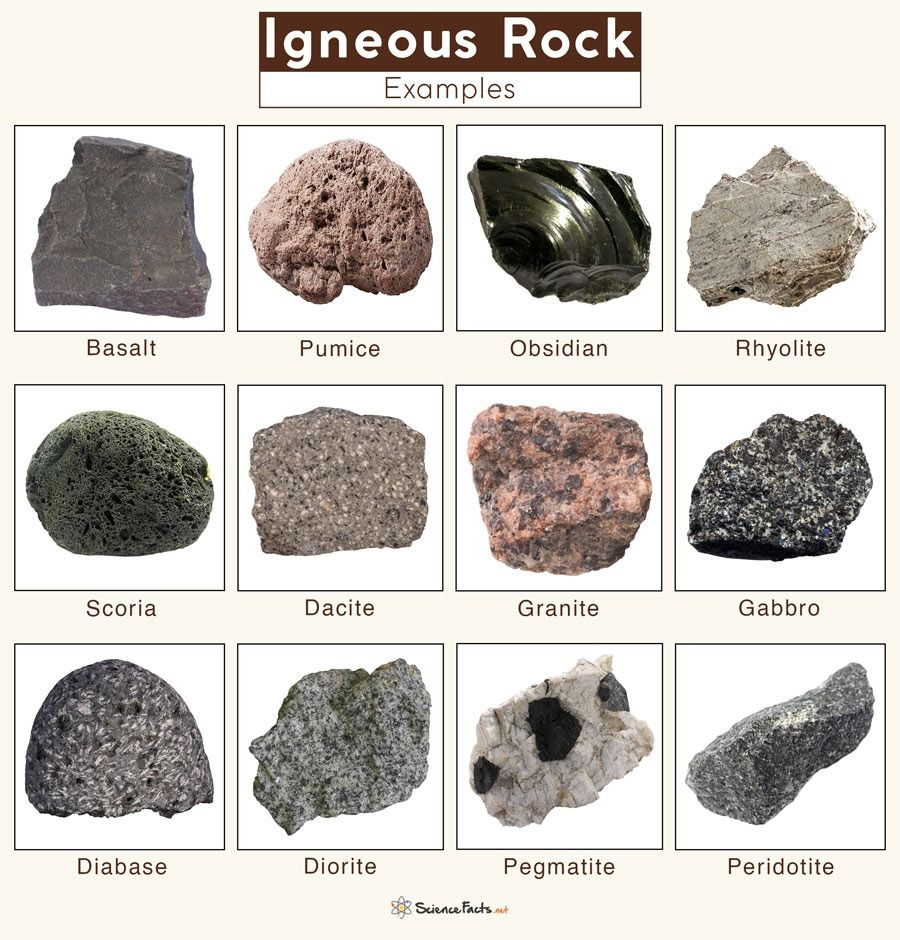

About Igneous Rocks
Igneous rocks are rocks that form when magma or lava cools and solidifies. Magma is molten rock found beneath the Earth surface, and lava is magma that reaches the surface through volcanoes.
Igneous Rocks – Key Points
- Formed when very hot melted rock (magma or lava) cools and becomes solid.
- Two types: Intrusive (cool slowly inside Earth → big crystals) and Extrusive (cool fast on surface → small crystals).
- Example of intrusive: Granite (big crystals you can see).
- Example of extrusive: Basalt (small crystals, often from volcanoes).
- Main minerals: quartz, feldspar, mica, olivine.
- No layers and usually no fossils.
Examples: Granite (intrusive), Basalt (extrusive).